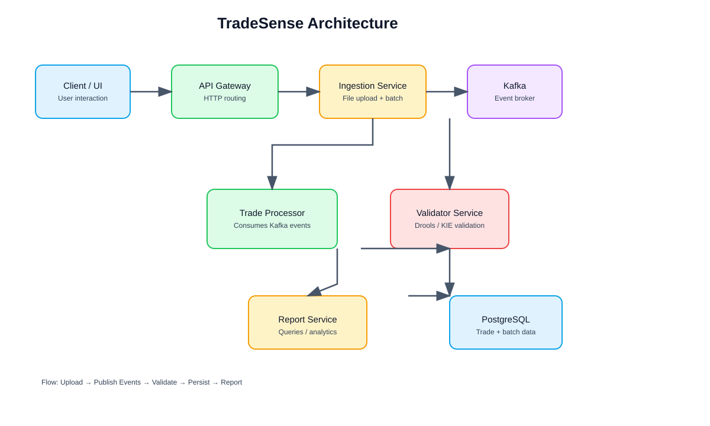

TradeSense is an event-driven trade data processing platform designed to ingest trade files, validate trade quality, persist structured trade records, and expose reporting and streaming capabilities through a unified API gateway.
| Service | Primary Responsibility | Communication Pattern | Data Store |
|---|---|---|---|
| tradesense-api-gateway | API routing and external access | HTTP/REST, reactive routing | None |
| tradesense-ingestion-svc | File ingestion and raw payload capture | HTTP upload + Kafka publish | PostgreSQL |
| tradesense-trade-processor | Event consumption and trade processing | Kafka consumer + HTTP validation call | PostgreSQL |
| tradesense-validator-svc | Trade validation logic | HTTP REST | In-memory Drools rules |
| tradesense-report-svc | Query/report generation | HTTP/REST | PostgreSQL |
| tradesense-liquibase | Schema versioning and migration | JDBC | PostgreSQL |

| Table Name | Significance | Key Columns |
|---|---|---|
| ingestion_batch | Tracks uploaded file batches and processing status. | batch_id, batch_name, source_type, file_name, file_checksum, status |
| ingestion_record | Stores raw payload records per batch. | record_id, batch_id, source_type, source_system, raw_payload |
| trade | Canonical processed trade record. | id, ingestion_record_id, booking_system, trade_id, source_type, trade_status |
| trade_instrumentation | Trade price and quantity metadata. | id, trade_id, instrument_id, quantity, trade_price |
| trade_validation | Outcome and details of validation checks. | id, trade_id, validation_status, error_code, error_message, rule_name |
Trade validation uses Drools/KIE to execute business rules. The trade processor sends a validation request to the validator service, which loads the KIE container, inserts the trade facts, fires the rules, and returns a structured response containing violation details.
TradeSense is designed as a modular, event-driven trade processing platform that balances reliability, traceability, and business rule flexibility. The combination of Spring Boot services, Kafka messaging, Drools validation, PostgreSQL persistence, and an API gateway provides a clear and maintainable architecture.